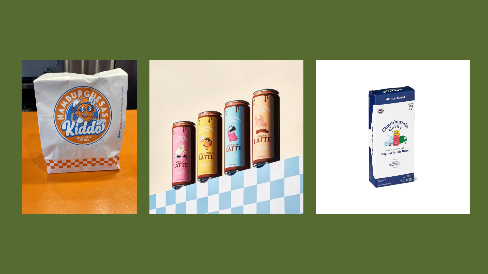
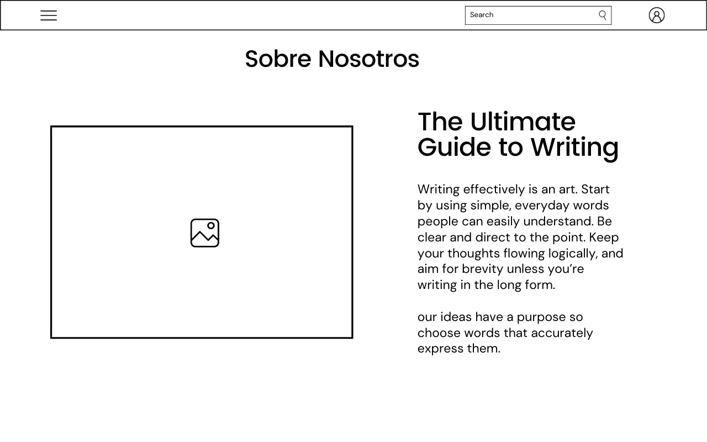

Presentacion Produccion digital I - 2do Cuatrimestre 2023
100% - Momento 3
Emma Sanclemente - 0138641
Prof. Wesceslao Iganacio Zavala
Imagen de marca
Objetivo del sitio: Este sitio busca llegar al público joven y vender sus productos (café) de una forma moderna y atractiva. Por lo que contaría con su shop que sólo vendería los artículos de la marca.
Inspiracion para la pagina
Perfil del lugar y su público: El perfil que tiene este sito es una modernidad pero llevada a la moda de ahora que es lo vintage, un estilo colorido pero al mismo tiempo clásico y retro

Imagen de marca
Paleta de Colores
Diseño de la interacción
La página contará con 4 htmls distintos, su página principal, su shop, su carrito de compras y una sección “sobre nosotros” de la marca
Arquetictura de la infromacion
El usuario siempre tendrá la opción de navegar entre las distintas páginas HTML desde cualquiera de estas secciones.
Arquetictura de la infromacion
El usuario ambos desde una computadora o celular al entrar a la página va a encontrarse con la “home’ de esta misma que muestra un poco de qué va la empresa y muestra algunos de sus productos.

Arquetictura de la infromacion
En el nav de este ,que va a ser el mismo en todos los htmls, van a haber tres otras secciones, la tienda de los productos, el carrito de compras y una sección de “sobre nosotros” dónde cuenta de la empresa y su historia.
Wireframe
Display Movil
❮
❯